Фотогалерея
Про галерею
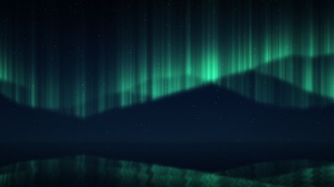
Дванадцять ночей під полярним сяйвом: фіорди, тундра, айсберги й травнева буря над Карпатами. Оригінали 1920×1080, мініатюри 480×270.Натисніть мініатюру — зображення відкриється у збільшеному вигляді (лайтбокс), гортайте стрілками ← → або клавіатурою. Посилання «Повний розмір» веде на окрему сторінку перегляду з кнопками «Назад» і «Вперед».
Мініатюри
| 01Зелена завіса над фіордом | 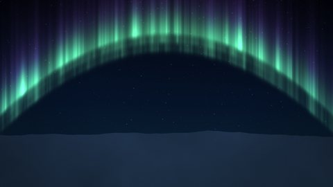 02Дуга сяйва над тундрою |
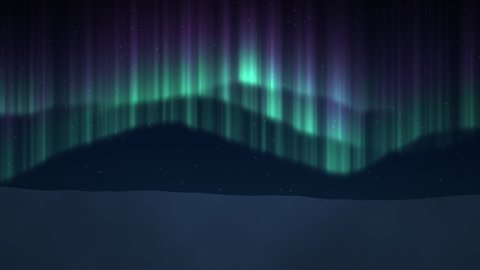 03Фіолетова кайма над тундрою |
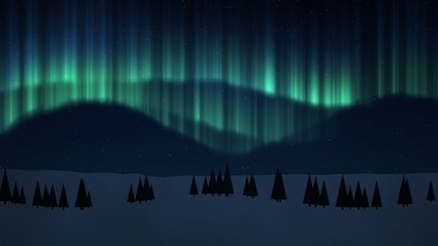 04Сяйво над засніженими ялинами |
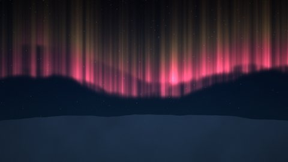 05Червоне сяйво великої бурі |
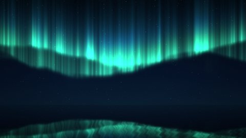 06Дзеркало озера в полярну ніч |
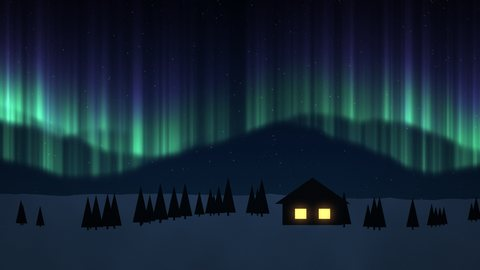 07Хатинка під північними вогнями |
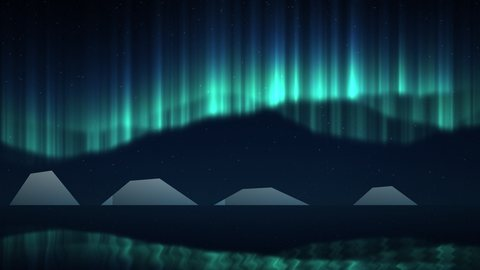 08Айсберги і смуги сяйва |
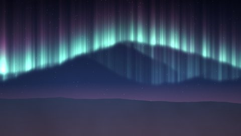 09Пульсуюче сяйво на світанку |
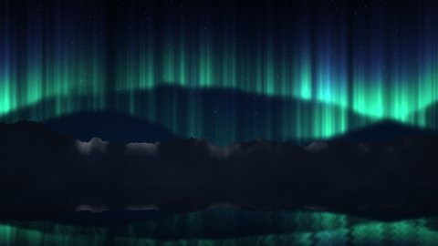 10Над хребтами Лофотенів |
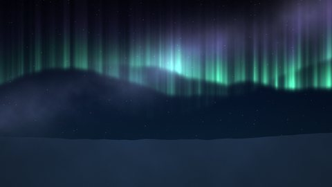 11Сяйво й Чумацький Шлях |
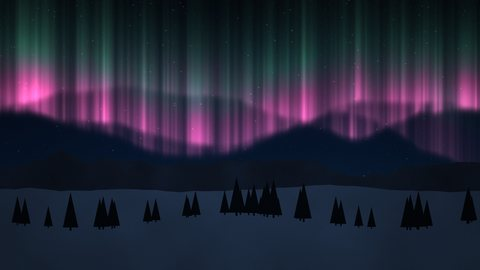 12Травнева буря 2024 над Карпатами |
Формат: JPEG, 1920×1080 (Full HD), до 400 КБ кожен файл; мініатюри 480×270. Усі зображення — власна процедурна графіка.